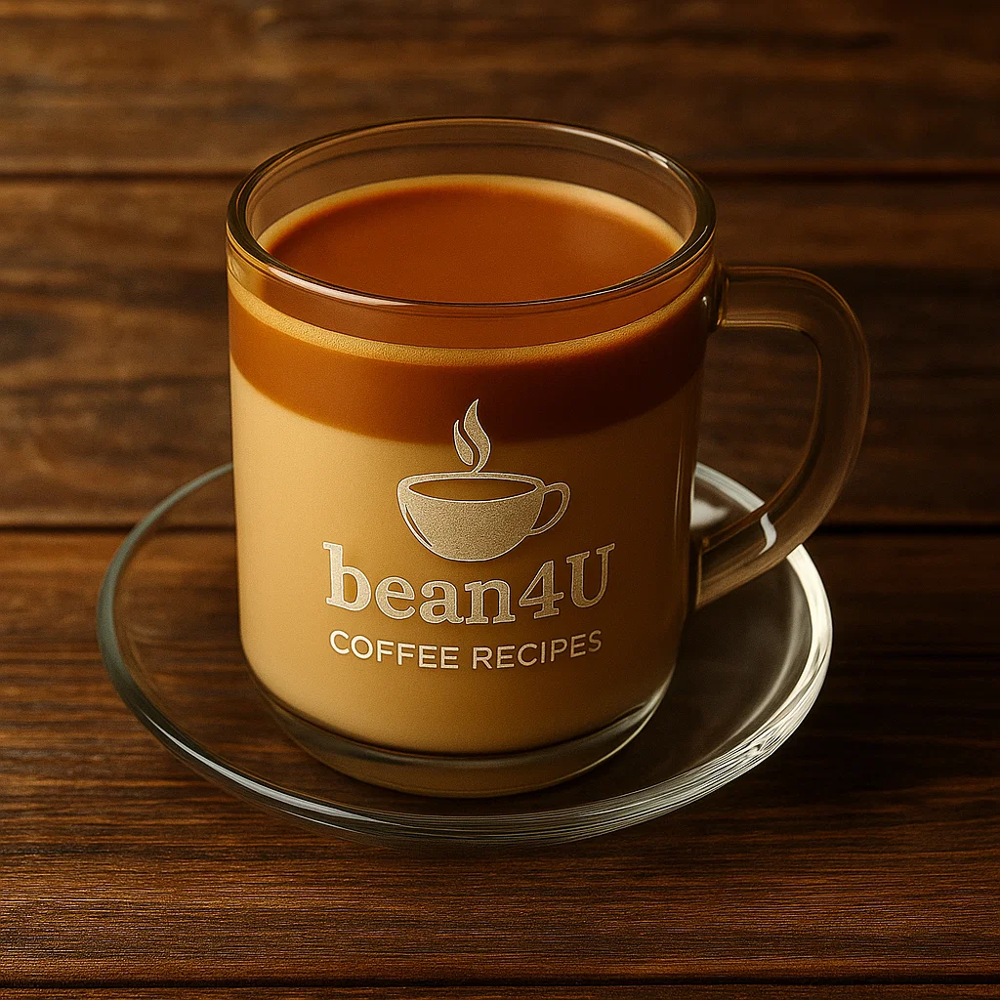

Coffee Milk

Ingredients
- 30 ml espresso
- 2 cups milk (whole, almond, oat, etc.)
- 1–2 Tbsp honey or flavored syrup
Preparation
- Warm milk gently (do not boil).
- Blend espresso into the milk.
- Sweeten with honey or syrup.
- Whisk until frothy, then pour into a mug.
- Top with a dusting of cocoa or cinnamon if desired.
- Watch a quick tip here.
Video from @creammagics Channel